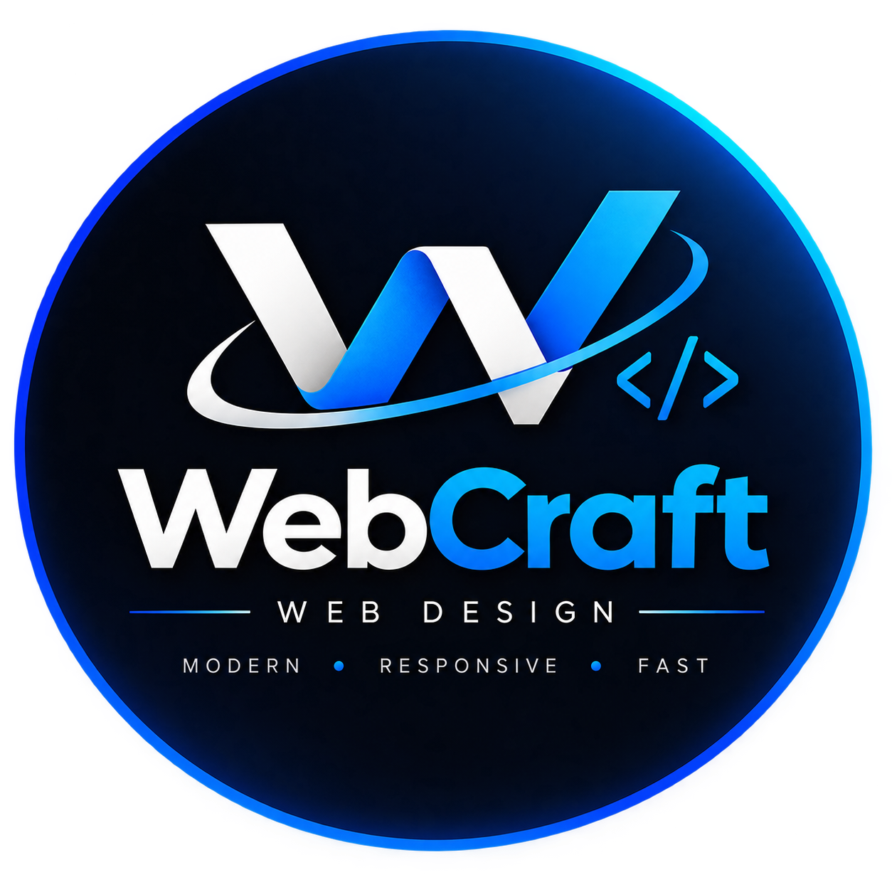

Business Websites
A distinctive, credible home for ambitious companies.
Explore ↗
WebCraftStart a project ↗WebCraft creates expressive, responsive and high-performance websites that turn attention into real business momentum.
01 / About WebCraft
We pair purposeful strategy with sharp visual systems and frictionless technology. The result is a digital presence that looks exceptional and works even harder.
Why WebCraft →02 / Capabilities
Every interaction is shaped to guide, persuade and keep your audience engaged.
A distinctive, credible home for ambitious companies.
Explore ↗High-converting pages designed around one clear action.
Explore ↗Considered storefronts that make buying feel effortless.
Explore ↗Tailored digital experiences with no template energy.
Explore ↗03 / Website concepts & demos
Explore the GYROMANIA interactive portfolio demo and three original WebCraft concepts: Sufra, Sahab and Forn. The three concept brands are fictional; GYROMANIA is a demonstration, not an official restaurant service.
A bilingual restaurant experience with customizable meals and an interactive shopping bag.
Arabic & English · Product customization · Persistent shopping bag
Portfolio preview only. Not the official restaurant website; no orders or payments are accepted.
For restaurants that want their menu and atmosphere to make a strong first impression.
Searchable menu · Dish details · Photo gallery
For cafés that want a welcoming website built around their coffee, space and story.
Coffee categories · Brand story · Visitor information
For bakeries that want to showcase their bread, pastries and daily selection.
Product filters · Item details · Mobile-friendly gallery
04 / The difference
Not just on-trend — built around a visual identity that holds up.
Refined mobile experiences, never a squeezed desktop site.
Lean, responsive builds that respect your visitors’ time.
Intuitive UX and SEO-ready structure from the first wireframe.
05 / Invest in your presence
Transparent starting prices. Explore your options, then contact WebCraft to agree on the scope and receive a tailored quote.
For a clear first presence
Ideal for freelancers and small businesses that need a focused introduction.
Example pages: Home, About, Services and Contact.
You provide the approved text, logo and images. Revision rounds and delivery dates are agreed in writing before work starts. New pages or features require a separate estimate.
A revision round is one consolidated feedback list within the approved scope, not a new design direction.
Included support covers fixes to the delivered work during the stated period, not new content, features or ongoing maintenance.
Separate from every packageDomain, hosting, e-commerce, payment integration and third-party fees are not included.
For a richer business story
Ideal for restaurants, cafés and businesses with more content to showcase.
Example pages: Home, About, Services or Menu, Gallery and Contact, within the page allowance.
You provide the approved text, logo and images. Revision rounds and delivery dates are agreed in writing before work starts. New pages or features require a separate estimate.
A revision round is one consolidated feedback list within the approved scope, not a new design direction.
Included support covers fixes to the delivered work during the stated period, not new content, features or ongoing maintenance.
Separate from every packageDomain, hosting, e-commerce, payment integration and third-party fees are not included.
For a tailored digital identity
For projects needing a more distinctive design and an individually agreed scope.
Page count and any custom functions are itemised in your written quote; this is not an unlimited package.
You provide the approved text, logo and images. Revision rounds and delivery dates are agreed in writing before work starts. New pages or features require a separate estimate.
A revision round is one consolidated feedback list within the approved scope, not a new design direction.
Included support covers fixes to the delivered work during the stated period, not new content, features or ongoing maintenance.
Separate from every packageDomain, hosting, e-commerce, payment integration and third-party fees are not included.
Understand your total investment
The package covers the agreed website design and development. The following services are quoted separately, only when needed.
Your website address. Registration and renewal are separate, with prices depending on the extension and provider. We recommend registration in your own account.
The service that keeps your site online. Hosting and renewal fees are separate. The provider, billing cycle and required resources are confirmed in the quote.
A product gallery is not an online store. A cart, order management, product management and delivery rules are additional work, scoped and priced separately.
Gateway integration is an optional, separate service for your website. Provider approval, transaction fees, subscriptions and other gateway charges are not included in our setup estimate.
Copywriting, paid images, extra languages, content management tools and ongoing maintenance are optional extras. Third-party licences and renewals are separate.
Before work starts, your written quote confirms pages, features, languages, revisions, timeline, payment arrangements and any recurring fees. Nothing is added without your agreement.
Need a hand choosing? Tell us about your business and we will suggest a suitable starting point.
Help me choose ↗06 / How it works
07 / Our promise
08 / Questions
Choose a starting package or use the estimator, then contact WebCraft. We discuss your requirements, confirm the scope and timeline, and provide a written quote. No online booking or payment is required.
Absolutely. The Premium package is ideal for tailored builds, or contact us to discuss a scope made specifically for you.
Delivery starts after the content and direction are approved. Most focused sites take around 2–4 weeks; your written quote confirms the timeline. Additional requirements or delayed approvals can change it.
Always. Responsive behavior is considered from the beginning, not added at the end.
Published prices are starting prices. Page count, languages, content and functions affect the final quote. We agree on the scope and total before work starts; later additions are priced separately.
No. They are separate from every package and may have recurring renewal fees. We can help with setup; provider costs and account ownership are clarified before purchase.
No. Showing products or a restaurant menu is different from accepting orders. A shopping cart, product administration, delivery rules and online payments require a separately agreed scope.
Yes. Packages start with one language. A second language, translated content and any extra layouts are agreed separately. The estimate includes an optional Arabic and English add-on.
Prepare your logo, business description, services or menu, contact details and images you have permission to use. Tell us if you need help writing content or sourcing images.
Your quote specifies the number of revision rounds before we begin. Each round is one consolidated list of changes within the agreed scope. A new direction or extra functionality is quoted separately.
If editing tools are included in your agreed scope, yes. A content management system is an optional add-on, not automatically included in every package. We clarify what you can edit and how it is handed over.
Yes. Standard contact and social links can be included in the agreed pages. Automated messaging, API integrations or paid external services are different features and are quoted separately.
The written agreement identifies the website files, account access, editing tools and licences to be handed over. We recommend that domain and hosting accounts belong to you. Third-party assets remain subject to their own licences.
The included period covers fixes to the work we delivered. After it ends, maintenance, content updates and new features can be quoted separately. Hosting renewals are not part of support.
We agree directly on a written quote, payment stages and delivery milestones before starting. WebCraft currently has no online booking or checkout. Contact us to discuss your project.
No ranking is guaranteed. SEO foundations help search engines understand the site; results also depend on content, competition and ongoing work. Paid campaigns and ongoing SEO are separate.
Your next move